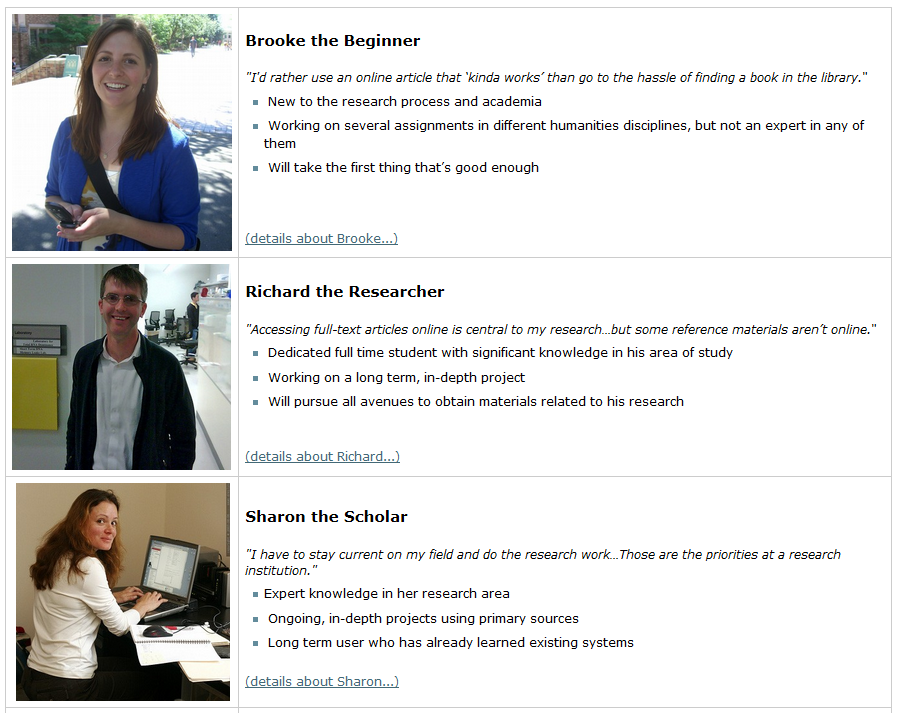

Making Web Services Accessible With Universal Design
Cynthia Ng
@TheRealArty
January 22, 2015
What is Web Accessibility?
Web accessibility means that people with disabilities can use the Web.W3C Web Accessibility Initiative. (2005). What is Web Accessibility. Introduction to Web Accessibility. http://www.w3.org/WAI/intro/accessibility.php- W3C Web Accessibility Initiative (WAI)
Types of Disabilities
- visual
- auditory
- physical/motor
- touch
- learning
Why Should You Care?
Disability > Minority*
* Based on 2006 Canadian census percentage of total population ages 15-64 with a disability, and the percentage of total population ages 15-64 of minorities.Policy & Legislation
Federal Departments & Ontario: Web Content Accessibility Guidelines (WCAG)
Lack of statutes or federal laws should not exempt [us] from providing equivalent access to all; it should drive [us] toward it.Fulton, C. (2011). Web Accessibility, Libraries, and the Law. Information Technology and Libraries.. http://www.w3.org/WAI/intro/accessibility.php- Camilla Fulton
Getting Buy-in

[It is] well known among web developers that websites that are accessible are also much more usable for everyone.Eyadat, M., & Lew, J. (2011). Web Accessibility Factor a Key Focus for Serving Students. Review of Business Research, 11(2), 80.- Mohammad Eyadat and Jeff Lew
Benefits
- reflect institutional mission, leadership, and values
- serve all users
- make sound fiscal policy
- add value to the institution
Benefits Simplified
- findable
- accessible
- usable
- shareable
- efficient
- collaborative
Approach to Accessibility
Avoid the peanut butter approach.Horton, S. & Quesenbery, W. (2014). A Web for Everyone: Designing Accessible User Experiences. Rosenfeld Media.- Sarah Horton & Whitney Quesenbery
It just won't work to build a complete system and then, in the final stages of development, spread the interface over it like peanut butter.Lewis, C. & Rieman, J. (1994). Task-Centered User Interface Design: A Practical Introduction. http://hcibib.org/tcuid/- Clayton Lewis & John Rieman
 shrosa814. (2010). Tale of Squirrel and Peanut Butter. https://www.flickr.com/photos/shicksba272214/5159576009 With Permission from Owner.
shrosa814. (2010). Tale of Squirrel and Peanut Butter. https://www.flickr.com/photos/shicksba272214/5159576009 With Permission from Owner.
Accessibility often gets pigeon-holed as simply making sure there are no barriers to access for screen readers or other assistive technology, without regard to usability.Quesenbery, W. (2009). Usable Accessibility: Making Web Sites Work Well for People with Disabilities. UX Matters. http://www.uxmatters.com/mt/archives/2009/02/usable-accessibility-making-web-sites-work-well-for-people-with-disabilities.php- Whitney Quesenbery @whitneyq
Designing for Assistive Technology
Assistive Technology
- screen readers
- text-to-speech
- screen magnifiers
- joysticks
- mobile devices
- keyboards
All Technology is Assistive Technology.Hendron, S. (2013). All Technology is Assistive Technology: 6 dispositions for designers on disability. https://medium.com/thoughtful-design/a8b9a581eb62- Sara Hendren @ablerism
 animoca. (2012). All the Myriad Androids. http://www.animoca.com/en/2012/05/all-the-myriad-androids/ CC-BY-ND 3.0
animoca. (2012). All the Myriad Androids. http://www.animoca.com/en/2012/05/all-the-myriad-androids/ CC-BY-ND 3.0
Move away from the approach of building separately for disabled users, and concern yourself with creating clean, beautiful, usable, and accessible websites.Riley-Huff, D. A. (2012). Web Accessibility and Universal Design. Library Technology Reports, 48(7), 29. http://connection.ebscohost.com/c/articles/83242903/web-accessibility-universal-design- Debra Riley-Huff
There is no average or normal user.Hendron, S. (2013). All Technology is Assistive Technology: 6 dispositions for designers on disability. https://medium.com/thoughtful-design/a8b9a581eb62- Sara Hendren @ablerism
Universal Design
Universal design is the design of products and environments to be usable by all people, to the greatest extent possible, without the need for adaptation or specialized design.Mace, R. (1998). Universal design in housing. Assistive Technology, 10(1), 21-28.- Ron Mace
 The Center for Universal Design. The Principles of Universal Design, Raleigh, NC: North Carolina State University. http://udlhcpss.wordpress.com/historical-foundations/
The Center for Universal Design. The Principles of Universal Design, Raleigh, NC: North Carolina State University. http://udlhcpss.wordpress.com/historical-foundations/
Universal Design Summarized
- equitable
- flexible
- simple
- intuitive
- low effort
- approachable
- usable
 marziarh. (2012). Robson Square. https://www.flickr.com/photos/maziarh/7216119402/ CC BY-NC-ND 2.0
marziarh. (2012). Robson Square. https://www.flickr.com/photos/maziarh/7216119402/ CC BY-NC-ND 2.0
Universal Design for the Web
WCAG Universal Design Examples
- each page should have a title
- have consistent navigation
- have a meaningful order to content
- provide multiple ways to discover content
- captions or transcript of audio/video
Universal Web Design Summarized
- solid
- clear
- helpful
- usable
- accessible
- easy to understand
- designed with people in mind first
Universal Design in Practice

 MichaelFitz. (2008). Computer Budgie II. https://www.flickr.com/photos/michaelfitz/3490322415
MichaelFitz. (2008). Computer Budgie II. https://www.flickr.com/photos/michaelfitz/3490322415
 tehchix0r. (2012). Texting (Project 365: 242/365). https://www.flickr.com/photos/tehchix0r/8186415277/ CC BY-NC-SA 2.0
tehchix0r. (2012). Texting (Project 365: 242/365). https://www.flickr.com/photos/tehchix0r/8186415277/ CC BY-NC-SA 2.0
Challenges
- technological variety
- user diversity
- bridging the knowledge gap
Ask Your Users
Personas
 University of Washington Libraries. (2008). UW Libraries Personas. http://staffweb.lib.washington.edu/news/units/ITS/ux/2009-q2/persona-construction/final-personas/uw-libraries-personas-overview-of-the-completed-projectContent Inventory

Card Sort

Task Analysis
 Reidsma, M. (2013). Slide 38. Websites are for People. http://matthew.reidsrow.com/articles/29 CC BY-NC-SA 3.0
Reidsma, M. (2013). Slide 38. Websites are for People. http://matthew.reidsrow.com/articles/29 CC BY-NC-SA 3.0
Developing Your Service
Approaches
Mobile First
Mobile forces you to focus.Wroblewski, L. (2009). Mobile First. http://www.lukew.com/ff/entry.asp?933- Luke Wroblewski @lukew
Progessive Enhancement
Worry about the less capable first.Usobiaga, J. (2013). Slide 37. Mobile First: As difficult as doing things right. https://speakerdeck.com/swwweet/mobile-first-as-difficult-as-doing-things-right?slide=37- @Swwweet
Progressive Enhancement moves almost all of our dev time and costs to newer browsers, not older ones.Jehl, S. (2014). Friday, 7 March 2014. The Pastry Box Project. https://the-pastry-box-project.net/scott-jehl/2014-March-7- @scottjehl
[Over 50% of mobile users] will wait only five seconds or less for a mobile site to load.Compuware Corporation. (2011). The new (or only) way to connect with customers. http://www.compuware.com/content/dam/compuware/professional-services/white-papers/The%20New%20or%20Only%20Way%20To%20Connect%20With%20Customers.pdf
Responsive Design

Good Practices
- well structured code
- style guides e.g. Normalize CSS
- pattern libraries e.g. UI Pattern Library by GVSU
- polyfills and other helper libraries e.g. picturefill
- APIs e.g. SFU Library API
- testing frameworks or set of evaluation tools e.g. QuailJS
- good documentation e.g. Phabricator
Some “Special” Considerations
Keyboard Accessibility

Skip Links
<body>
<a class="hide-text" href="#main">Skip to Main Content</a>
<nav role="navigation">
// Menu
</nav>
<div id="main" role="main">
// Content
</div>
</body>
ARIA
Accessible Rich Internet Applications Suite
<nav role="navigation">
// Menu
</nav>
Reference:
Media
- Images: alt=""
- Audio: transcript
- Video: transcript
- Video: captions
- Video: descriptive audio
Descriptive Video Example
Electrox3d. (2011). Star Wars for Blind People (Blu-ray audio track): description of a Jawa shooting R2!. http://www.youtube.com/watch?v=PCZqKxQME6oTop 10 Academic Library Websites
6 / 10 have carousel
5 / 6 autoplay
Singley, E. (2013). Top 10 Academic Library Websites. http://emilysingley.net/top-10-academic-library-websites-2013/Top 20 Public Library Websites
18 / 20 had carousel
17 / 18 autoplay
Anderson, M. (2013). 20 Great Public Library Websites. http://www.mattanderson.org/blog/2013/02/11/20-great-public-library-websites/Death to the Carousel
Inspired by shouldiuseacarousel.comTesting and Assessment
Frameworks
Evaluation Tools
- HTML Codesniffer (bookmarklet)
- WCAG Contrast Checker (Firefox plugin)
- WAVE Toolbar
- For more, W3C Web Accessibility Tools list
Simulation Tools
Analytics
 HD Wallpapers 3D.com. (n.d.) Heat Map HD Wallpaper 3. http://www.hdwallpapers-3d.com/heat-map/heat-map-hd-wallpaper-3/. Believed to be in public domain.
HD Wallpapers 3D.com. (n.d.) Heat Map HD Wallpaper 3. http://www.hdwallpapers-3d.com/heat-map/heat-map-hd-wallpaper-3/. Believed to be in public domain.
User Testing
- 5 second test
- Lab Task Test
- Guerilla Testing
- Paid Testing (e.g. VIRN)
Training and Documentation
Guidelines for Content Creators
- Be clear and concise
- Use headers and tables properly
- Use descriptive links
- Describe images if needed
- Make and choose videos with captions, and add a link if you embed them
 Alexander, Dey. (2014). Text alternatives for images: a decision tree.
Alexander, Dey. (2014). Text alternatives for images: a decision tree.
Accessibility Statement
I’ve learned that what matters [...] is an actionable process — possible to use, adapted to the company’s culture and financially effective.Treder, M. (2012). Beyond Wireframing: The Real-Life UX Design Process. Smashing Magazine. https://www.smashingmagazine.com/2012/08/beyond-wireframing-real-life-ux-design-process/- Marcin Treder @marcintreder
Resources
Examples
Take Away
Until people find themselves in a situation where they are disabled due to their surroundings, they cannot fully appreciate how the built and virtual environments can throw obstacles in their paths – and indeed, profoundly affect their quality of life.City of Calgary. (2010). Universal Design Handbook. http://www.calgary.ca/CSPS/CNS/Pages/Publications-guides-and-directories/Universal-Design-Handbook.aspx- City of Calgary